Network graph showing the gods as characters in the Popol Vuh, connecting them to the sections of the text in which they each were referenced.
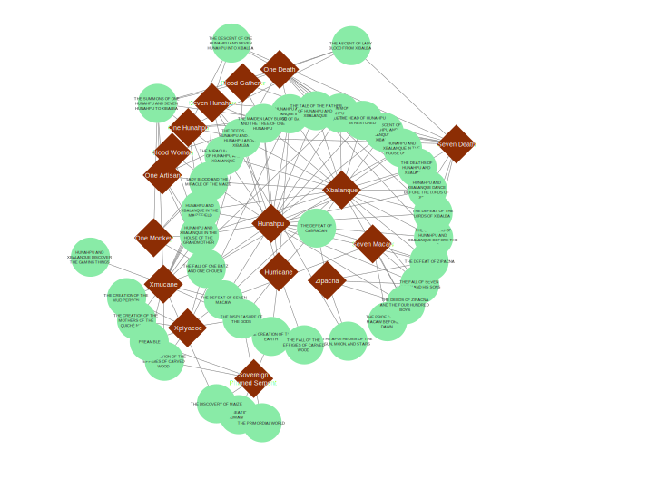| Image | God Names & Relationships | Description |
|---|---|---|
| 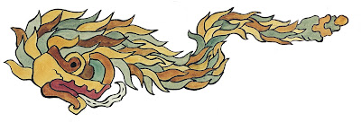 |
Sovereign Plumed Serpent
(Kukulkan)
|
Sovereign Plumed Serpent is a feathered serpent god very similar to Quetzalcoatl of the Aztecs. In the Quiché language his name is Tepeu Gucumatz and it’s actually the first place we come to a translation issue, as often in previous translations Tepeu and Gucumatz were translated as two separate gods. He is also part of the group that, in three separate stages, creates men out of three different materials: mud, which dissolves into nothingness; wood, which fails to respect the gods and is destroyed for it; and lastly, maize, which succeeds in creating the people we know today. |
| 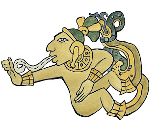 |
Hurricane
(Thunderbolt Hurricane)
|
Hurricane is the leader of the three thunder gods that together are Heart of Sky (sometimes called Heart of Sky, Heart of Earth). The god is often called One-Legged because in most depictions he has one human leg and a serpent’s tail. |
| 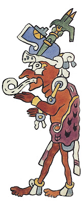 |
Xpiyacoc
(Grandfather)
|
Xpiyacoc and Xmucane referred to as a pair almost always in epithet are the two oldest gods of the Quiché-Maya pantheon. This doesn’t end up being as successful as any of the gods would like, so the pair also helps create the final version of man, maize men. |
| 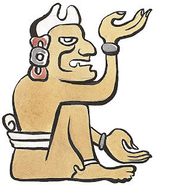 |
Xmucane
(Grandmother)
|
Xpiyacoc and Xmucane referred to as a pair almost always in epithet are the two oldest gods of the Quiché-Maya pantheon. This doesn’t end up being as successful as any of the gods would like, so the pair also helps create the final version of man, maize men. Xmucane even grinds the maize from which the first men are made. |
| 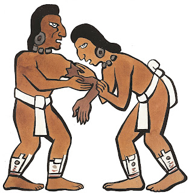 |
Hunahpu
(One Blowgun Hunter, Venus Lord)
Mother:Blood Woman Father:One Hunahpu |
Hunahpu is one of the hero twins in the Popol Vuh. Both brothers were intelligent, brave, handsome, and had magical powers; all necessary traits for their role as the heroic protagonists for the Popol Vuh. With his brother, Xbalanque, he rids the pre-human world of all manner of villainous gods, including Seven Macaw, Zipacna, One Death, and Seven Death. Hunahpu is a skilled trickster and is referred to by the narrator as genius. Though the twins are physically strong and are skilled at physical pursuits such as playing ball and shooting birds with blowguns, their genius is their most important asset and is the primary reason why the twins are so successful in ridding the world of evil. Hunahpu's genius is apparent even before his birth, when the narrator suggests that he and Xbalanque are responsible for leaving signs that allow his grandmother, Xmucane, to understand that Blood Moon is telling the truth about the twins' immaculate conception. Their father is One Hunahpu, and the twins are conceived when he spits into Blood Moon's hand. After the twins sacrifice One and Seven Death, they ascend to the sky with the Four Hundred Boys to become the moon and sun. |
| 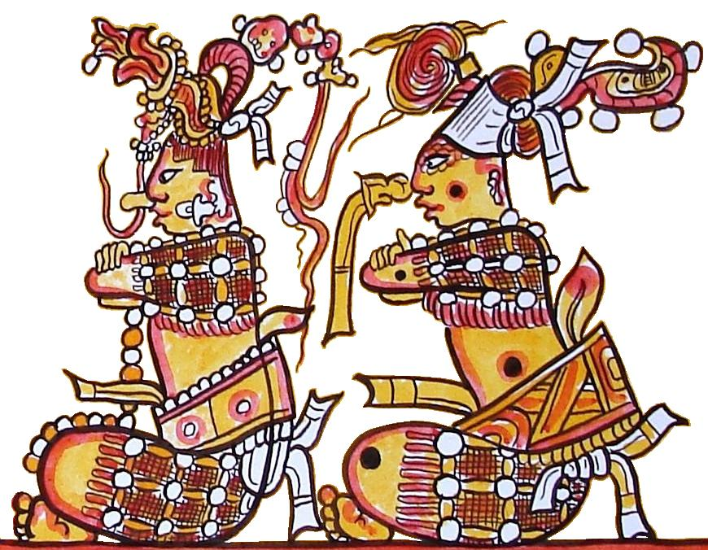 |
Xbalanque
(Young Hidden Sun, Jaguar Sun)
Mother:Blood Woman Father:One Hunahpu |
Xbalanque is one of the hero twins in the Popol Vuh. He and his twin, Hunahpu, dedicate their lives to taking down any characters who seek to "magnify themselves" and attempt to appear more powerful than they actually are. The twins are very strong and excel in their physical pursuits. In particular, the boys are very good at playing a traditional Mesoamerican ball game, just like their father and uncle One Hunahpu and Seven Hunahpu were before their deaths. Despite this, however, Xbalanque and Hunahpu's greatest assets are their smarts and their ability to lay traps and tricks for others, while also seeing through their adversaries' tricks. In particular, this is how Xbalanque and Hunahpu best One Death and Seven Death. After this, the boys leave earth for the sky, where they become the moon and sun. |
| 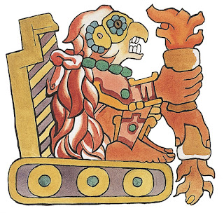 |
Seven Macaw
(Principal Bird Diety, Wuqub Kaquix)
|
Seven Macaw Is a highly prideful god who is often compared to Lucifer by scholars of the Popol Vuh. The brightly colored Macaw demon-god is also the father of both Zipacna and Earthquake, who both share his arrogance. He incurs the wrath of Heart of Sky by declaring himself to be both the sun and the moon to the wooden men. |
| 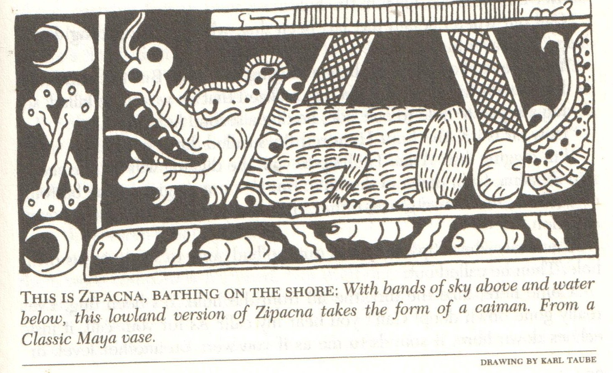 |
Zipacna
Father:Seven Macaw |
Zipacna (or Sipac) is a celestial crocodile warrior, considered a counterpart of the pan-Mesoamerican god Cipactli, the earth-monster, who had to be killed to create the earth. Known mainly from the 16th-century highland account of the Popol Vuh, Zipacna also appears in oral traditions of rural towns in highland Maya regions. According to the Popol Vuh, Zipacna was the maker of mountains, who spent his days looking for crabs and fishes to eat, and his nights lifting up the mountains. One of the demonic sons of Seven Macaw, Zipacna was known as the crust of the earth. He had the power to create mountains overnight. Like his father though he is too prideful and similar to his father. As his father claims to be the sun and the moon, he claims to be the creator of the earth. He outsmarts the Four Hundred Boys when they try to kill him by burying him in a deep hole, and when they're too drunk to fight back, Zipacna brings their hut down on them and kills them all. Hunahpu and Xbalanque take revenge by starving Zipacna for two days, and then setting a trap for him by placing a fake crab under an overhang at the foot of a mountain. When Zipacna wiggles into the small space to get the crab, the mountain rests on his chest and he turns to stone. |
| 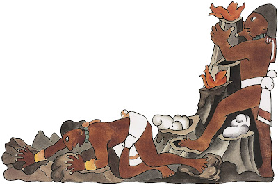 |
Earthquake
Father:Seven Macaw |
Earthquake is the other demonic son of Seven Macaw. As his name suggests he is the god of earthquakes, causing mountains to move with the tap of his foot. Like his brother and father, he is prideful. Hurricane instructs Hunahpu and Xbalanque to trick Earthquake into sitting down somewhere in the east, which the twins do by telling Earthquake that there's a massive mountain in the east. As they travel, Hunahpu and Xbalanque coat a bird in plaster and give it to Earthquake to eat. This causes Earthquake to lose the strength in his arms and legs, and the twins bury him in the earth. |
| 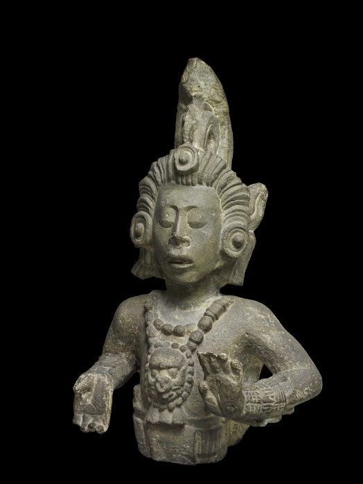 |
One Hunahpu
(Maize God, Hun Hunahpu, God E)
|
The maize god, Hun Hunahpu, was one of the most important owing to his connection with this vital staple crop. Hun Hunahpu is the first child of the two oldest gods in the Maya pantheon, the Grandfather and the Grandmother. Though it might seem strange to have characters named One and Seven Hunahpu, the distinction has to do with Maya astronomy and their calendrical system. One would be the beginning of a cycle. |
| 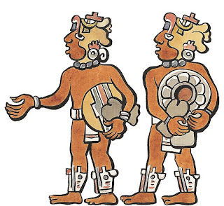 | Seven Hunahpu | Seven Hunahpu is the second child of the two oldest gods in the Maya pantheon, the Grandfather and the Grandmother. Though his brother One Hunahpu fathers children, Seven Hunahpu never takes a wife and, according to the narrator, remains "a boy" and a mere uncle figure to his four nephews. He and his brother are very good at a traditional Mesoamerican ball game, and Seven Hunahpu spends most of his time on earth playing. He dies when One Death and Seven Death summon him and One Hunahpu to Xibalba for a match, and he and his brother fall for all the tricks of the Xibalban lords. After Hunahpu and Xbalanque's victory, they ask Seven Hunahpu to name the parts of his face so that he can "be put back together again" after his death. Though Seven Hunahpu can only name a few parts of his face, the twins leave their father and uncle buried in the ball court so they'll be able to be appropriately worshipped. Though it might seem strange to have characters named One and Seven Hunahpu, the distinction has to do with Maya astronomy and their calendrical system. Seven would be the end of the cycle. |
| 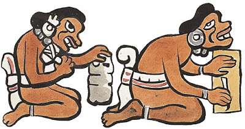 |
One Monkey
(One Batz)
Mother:Xbaquiyalo Father:One Hunahpu |
One Monkey is onne of the sons of One Hunahpu and Xbaquiyalo. Before One left for Xibalba to eventually be defeated, the two brothers trained One Monkey and One Artisan to be great artisans. With time they became accomplished flautists, singers, writers, carvers, jewelers, and metalworkers; even becoming quite wise. Unfortunately they were tortured souls, extremely jealous of Hunahpu and Xbalanque as their younger half-brothers were better than them at most everything. |
| 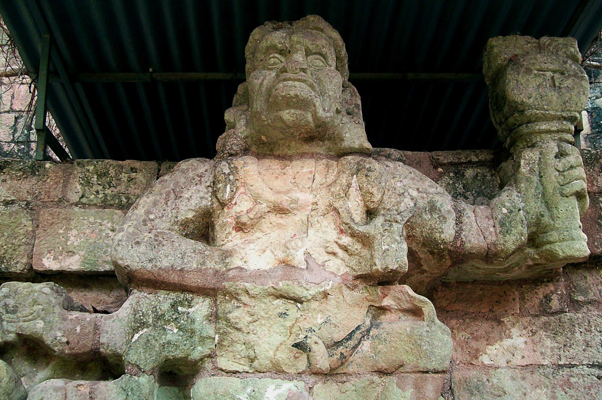 |
One Artisan
(One Chouen, One Howler)
Mother:Xbaquiyalo Father:One Hunahpu |
One Artisan is one the sons of One Hunahpu and Xbaquiyalo. Before One and Seven Hunahpu left for Xibalba to eventually be defeated, the two brothers trained One Monkey and One Artisan to be great artisans. With time they became accomplished flautists, singers, writers, carvers, jewelers, and metalworkers; even becoming quite wise. Unfortunately they were tortured souls, extremely jealous of Hunahpu and Xbalanque as their younger half-brothers were better than them at most everything. |
| 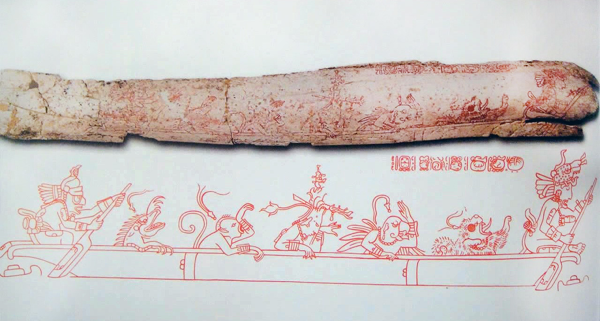 | Lords of Xibalba | The lords of Xibalba are the court that rules Xibalba, the underworld. The group as a whole is far from a charming lot, and tends to ultimately sacrifice all who come before them, either personally or by means of their six houses, each of which serves as trial. In order of highest to lowest rank the lords of Xibalba are: One and Seven Death, who are the ruler and second in charge of Xibalba; House Corner and Blood Gatherer, who draw blood from people; Pus Master and Jaundice Master, responsible for dispensing their respective namesakes; Bone Scepter and Skull Scepter, who cause people to become emaciated until they’re nothing but bones; Trash Master and Stab Master, who punish those with untidy doorways and patios by stabbing them; and Wing and Packstrap, who cause people to spontaneously die on roads. It is One and Seven Death who, angered by the sounds of the ball game played by One and Seven Hunahpu on the road to Xibalba, summon the twins to Xibalba to sacrifice them. The remaining residents of Xibalba are thought to have fallen under the dominion of one of these Lords, going about the face of the Earth to carry out their listed duties. |
| 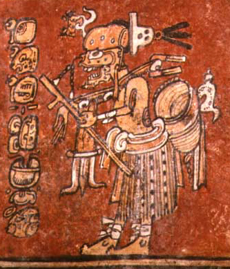 | One Death | One Death is one of the most powerful lords of Xibalba, along with Seven Death. Both lords enjoy their peace and quiet, which leads them to summon One Hunahpu, Seven Hunahpu, Hunahpu, and Xbalanque to Xibalba in attempts to sacrifice them after they make too much noise playing their ball game. One Death is also a skilled trickster, and sets many traps for his potential victims. He does, however, attempt to magnify himself far beyond what he deserves, and this is his downfall. He dies when he's too entranced by Xbalanque and Hunahpu's return as minstrels to understand that they're actually going to kill him. |
| 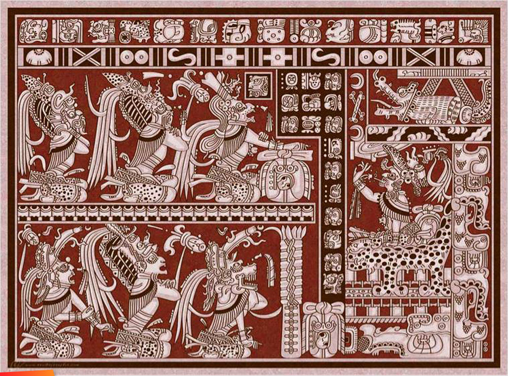 | Seven Death | Seven Death is a powerful lord of Xibalba who works primarily with One Death. The lords are skilled ball players, though they detest when non-Xibalban gods play ball, as it makes a great deal of noise in Xibalba. This leads One Death and Seven Death to summon ball players to Xibalba with the intention of putting an end to the noise. One and Seven Death are successful in tricking and killing One Hunahpu and Seven Hunahpu, but they are outsmarted time and again by One Hunahpu's sons, Hunahpu and Xbalanque. |
| 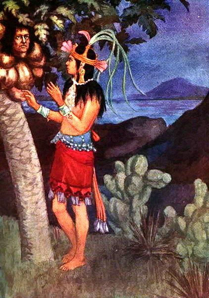 |
Blood Woman
(Little Blood, Lady Blood, Xquic, Maiden)
|
Blood Woman, or simply the Maiden, is the daughter of Blood Gatherer, the fourth lord of Xibalba. After being told by her father about the calabash tree under which One and Seven Hunahpu are buried, she decides to go to the tree to see its fruit. When the Maiden arrives at the tree, though, the decapitated head of One Hunahpu spits into her hand impregnating her with Hunahpu and Xbalanque. Six months into her virgin pregnancy, when the Maiden begins to show signs of her pregnancy the lords of Xibalba determine that she must be sacrificed and order their owl messengers to do so. |
| 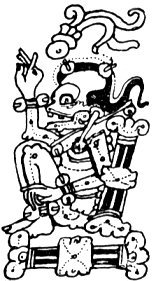 |
Blood Gatherer
(Gathered Blood, Cuchumaquic)
|
Blood Gatherer is the fourth lord of Xibalba. He has a virgin daughter, Blood Moon, and is enraged when he realizes she's pregnant. Because he believes that her children will be bastards, he, One Death, and Seven Death command the owl messengers to take her into the woods and cut out her heart. |
| 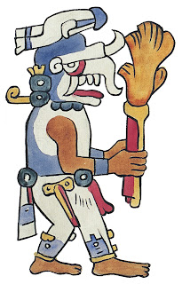 | Tohil | Tohil is the patron god of the Quiché-Maya and the bringer of fire, which he creates by pivoting in his sandal. Tohil first appears by name in the fourth part of the story which outlines the lineage of man up until the writing of the Popol Vuh. Interestingly in Diego Rivera’s watercolors we see Tohil first appear in the creation of the universe. It’s slightly uncertain exactly what his connection to the inception of the earth may have been. Tohil is probably best known for being the first to ask the Quiché to perform sacrifice. But despite being a somewhat demanding god Tohil can also be quite benevolent. He saves the early men from dying from the cold by giving them fire. His mercy ends as soon as he believes he has been slighted, though. A rival tribe, the Cakchiquels, steals fire from the Quichébecause they too are dying from the cold. Tohil demands that the thieves be sacrificed, so as to embarrass their patron god, Calm Snake (who oddly enough has the appearance of a bat). |